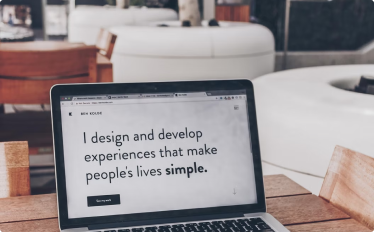

Hi there! My name is Roku and welcome to my learning journal.
After several months of learning in the Frontend Developer Career
Path, I've made the big jump over to the Bootcamp to get expert code
reviews of my Solo Projects projects and meet like-minded peers.
How I stay commited to learning
I like to think of myself as a lifelong learner. I used to spend hours
and hours learning, then try to create simple projects using what I
learned or work new techniques into existing projects.
How I got started
I started simple and gradually grew my learning journal site. I would
take notes about what I was learning. After each learning session, I'd
use my notes to not only reflect on what I learned but also write short
summaries of what I learned using my own words.
That helped me grok what I was learning, and I realized that posting my
learning summaries was helping others learn and stay motivated.
Recent posts

November 18, 2023
Blog one
I'm excited to start a new learning journey as a Scrimba Bootcamp
student! After several months of learning in the Frontend Developer
Career Path.

November 18, 2023
Blog two
I'm excited to start a new learning journey as a Scrimba Bootcamp
student! After several months of learning in the Frontend Developer
Career Path.
November 18, 2023
Blog three
I'm excited to start a new learning journey as a Scrimba Bootcamp
student! After several months of learning in the Frontend Developer
Career Path.